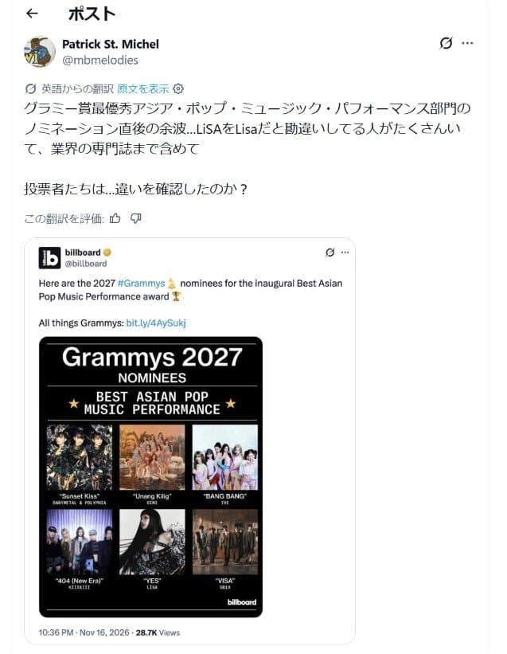

한국은 보이콧해서 거진 참여 안했는데
갑자기 일본에서 Ado랑 요네즈 켄시가 후보 탈락함
근데 뜬금없이 블랙핑크 리사가 후보로 나옴
사건의 전말
일본의 동명이인 LiSA의 YES를 출품안한 블랙핑크 LISA로 착각하고
요네즈 켄시랑 아도 탈락시키고 올림
사진도 LISA로 올리고 X도 안 달아놓다. [리사는x를 안함]
이후 부랴부랴 LiSA로 수정
요약 : 후보들 노래도 안들어보고 상줌

한국은 보이콧해서 거진 참여 안했는데
갑자기 일본에서 Ado랑 요네즈 켄시가 후보 탈락함
근데 뜬금없이 블랙핑크 리사가 후보로 나옴
사건의 전말
일본의 동명이인 LiSA의 YES를 출품안한 블랙핑크 LISA로 착각하고
요네즈 켄시랑 아도 탈락시키고 올림
사진도 LISA로 올리고 X도 안 달아놓다. [리사는x를 안함]
이후 부랴부랴 LiSA로 수정
요약 : 후보들 노래도 안들어보고 상줌
밥상이나 차려라 병신들아
이제 수상해도 그냥 아무 의미없는 상이 되어버렸네 ㅋㅋㅋ
그래미에서 이런 식의 졸속처리라니
이젠 그래미 명성도 권위도 다 없어져서 후에 그래미 수상해도 아무 감흥 없을듯
좆도 아는거도 없어보이는데 뭔 깡으로 아시아부문을 신설한거임?
그래미는 50가지 그림자뿐이다
노래 안 듣고 이름만 보고 뽑은 거 자백했네 ㅋㅋ